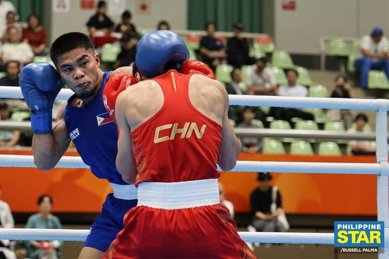
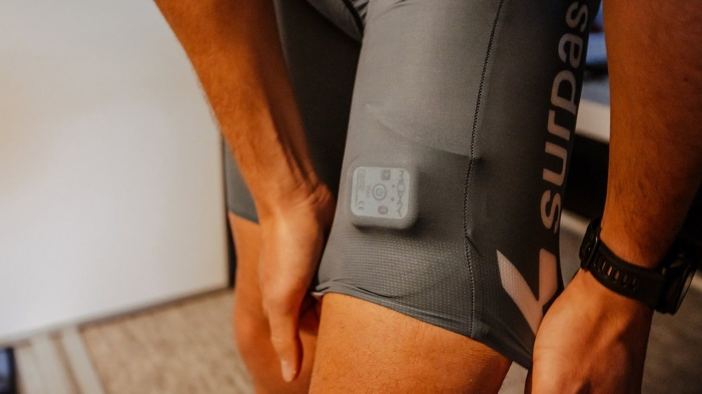

Russia’s heaviest energy-grid wave in months; 7 dead
30 Sep–1 Oct 2026
ABC / wire: Nearly 190 drones and ballistic missiles hit power sites around Kyiv and other regions — Ukraine’s first emergency cuts since spring. Zelenskyy said seven people died, including a child; air force claimed 5 missiles and 155 drones downed. A 12-hour alert, tram stops, and freezing nights ahead mark the winter pressure campaign.
Open ABC
US-led coalition formally ends Iraq mission
30 Sep–1 Oct 2026
AFP / Reuters / Manila Times: The Pentagon said Operation Inherent Resolve in Iraq concluded Wednesday under the 2024 US–Iraq joint track. Baghdad marks Oct 1 as Sovereignty Day; analysts warn Iranian-backed factions and a resurgent Islamic State could fill gaps as US troops leave remaining bases.
Open Manila Times
Flydubai FZ1073: co-pilot stabbing diverts Israel-bound jet
30 Sep 2026
Time / National / PBS: Dubai–Tel Aviv flight diverted to Tabuk, Saudi Arabia after an in-cockpit attack. Netanyahu said the co-pilot stabbed the captain and tried to crash the plane; passengers and off-duty crew helped regain control. UAE GCAA opened a probe; Saudi authorities hold the suspect.
Open Time
UK PM: ‘strong indications’ Iran tied to RAF Fairford scare
1 Oct 2026
ABC / BBC interview: Prime Minister Andy Burnham said UK authorities see strong indications Iran played a part in the Sunday incident near RAF Fairford, a base used by US aircraft in recent Iran operations. Five British men arrested on terrorism/explosives suspicion were bailed; police found petrol, no devices. Iran has denied involvement.
Open ABC
COCOPEA: science-based, localized suspensions — stop blanket walang pasok
29 Sep 2026
Daily Tribune: Private-school council COCOPEA urged hazard-based, localized class calls so safe areas keep face-to-face learning. Broad shutdowns, it said, deepen learning loss. Parent ops: after transport-strike suspensions, treat LGU/school channels as source of truth — not the group-chat rumor.
Open Tribune
LAUSD sets grade-level screen caps for 2026–27
Fall 2026 rollout
K-12 Dive: Los Angeles Unified is locking in classroom screen-time limits by grade and blocking student-led video streaming on district devices for the new year. Desk read for PH parents watching US district moves: minute caps and teacher-led tech are the new default, not open Chromebook hours.
Open K-12 Dive

Asiad board: Paalam into 55kg final; Eala SF locks bronze
30 Sep–1 Oct 2026
Philstar Pang-Masa: Carlo Paalam beat Kazakhstan’s Makhmud Sabyrkhan 3-2 to reach the men’s 55kg boxing final. Alex Eala dismissed Joanna Garland 7-5, 6-0 into the women’s singles semis vs China’s Wang Xiyu — bronze already secured. Those medals stack on PH’s 3-3-12 (18) board led by Carlos Yulo’s two gymnastics golds and EJ Obiena’s pole-vault gold.
Open Philstar
Obiena defends Asiad vault; PATAFA best athletics haul in 40 years
29 Sep–1 Oct 2026
Manila Times / Philstar: EJ Obiena cleared wet Nagoya conditions for a second straight pole-vault gold (Asian Games record 5.91 m). With Bossong’s 800m bronze and Cabang Tolentino’s 110m hurdles bronze, Philippine athletics posts its best Asian Games since 1986.
Open Philstar
Starship’s first orbit still shadowed by engine cut for Artemis
28 Sep–1 Oct 2026
Space Scout / Phys.org / Reuters desk: Flight 14 reached orbit and deployed Starlink V3 birds, then returned early after a propulsion issue and a hard Pacific splashdown. NASA’s Artemis path still leans on a Starship lander; long-duration and tanker steps remain the schedule risk versus Blue Origin as hedge.
Open Space Scout

Garmin acquires Moxy Monitor; Muscle Battery signal strengthens
28 Sep 2026
Gadgets & Wearables / SGI: Garmin bought muscle-oxygen sensor maker Moxy Monitor, a move watchers tie to the pending “Muscle Battery” training metric. No price or ship date disclosed — desk take: Garmin is buying the sensing stack behind recovery/load features, not just watch firmware.
Open Gadgets & Wearables